2. Modelling

2.2 Modelling Tools
The tools described in this section are reached through the Tools menu on the top menu bar.
All of the tools create new objects, some create spline or triangle meshes which are then
editable in the ways described in the previous section.
2.2.1 Array
This tool can create several objects as copies of any existing object. Clicking on an object
in the Object List and selecting Array from the Tools menu brings up the
following dialogue box:
| 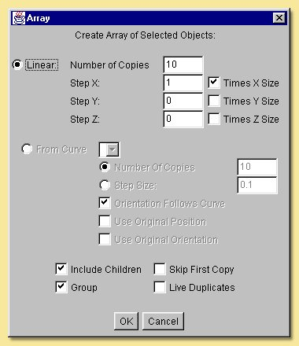 |
Copies can be made along a straight line (Linear) or along a pre-defined curve. In the
Linear option, the number of copies is specified and the direction along which to put the
copied objects, i.e. x, y or z, by specifying a number in the Step X, Step Y and Step Z
boxes. This number is the spacing of the resulting objects which can either be
defined in terms of the object size (tick Times X Size or whichever direction you want)
or in absolute units (leave boxes unticked). For example, specifying 1 in the Step X
box and ticking the Times X Size box will produce copies running along the x-axis that
will just be touching. Copies running along any vector can be defined by
specifying steps in more than one Step X/Y/Z box as shown below:
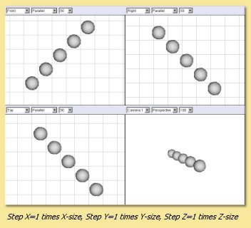 |
Using the From Curve option allows the copied objects to be created along a path defined
by an existing curve which can be selected from the pull down menu. Copies are spaced
evenly along the curve and the number is either explicitly specified or calculated from
the specified Step Size (in units). The orientation of the copied objects can
either follow that of the curve or be fixed at that of the original (untick Orientation
Follows Curve). In addition, the original position and orientation can be used to form
the basis for the position and orientation of the copies.
In the example on the right, the Array tool has been used to create some wheel spokes. In this case
a approximating smoothing polygon was used to produce a circular path. The original
cylinder was positioned as shown and its orientation and position were used and
'Orientation Follows Curve' was ticked.
|
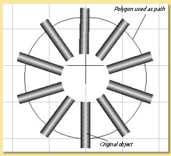
|
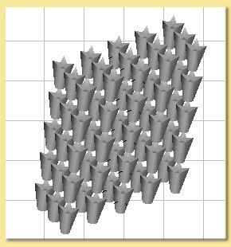
Note that the Array tool can be used on arrays. This example shows an array of an
array of an array and shows how quickly a large number of copies could be made. |
|
The tick boxes at the bottom of the dialogue determine further options:
Include Children means that children of the object to be copied will be copied as well.
Group means that the objects created by the Array tool will be grouped together under a Null
object parent.
Skip First Copy means that the first copy will not be made. This is useful if you want the
original object to be one of the array.
Live Duplicates means that the objects created by the Array tool are 'live', i.e. changes
made thereafter to the original object will be automatically applied to the copies.
2.2.2 Extrude
This tool creates a spline mesh object by extending a curve along an axis or another curve.
Take the example below. On the left is a closed curve made using the approximating
curve tool. Selecting Extrude from the Tools menu produces the dialogue box
shown below right:
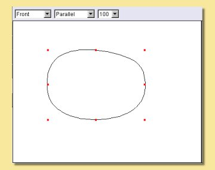
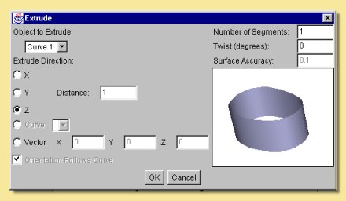
The curve has been pulled along the z-axis in this example to produce a cylinder-like
spline object. The resulting object is displayed on the right of the Extrude dialogue
box and can be rotated around by clicking and dragging over the object in order to
better visualise it. In this particular example, because the curve lies in the x-y
plane, extruding along either the x- or y-axis will produce a 2-D object and extruding
along the z-axis creates an object with sides perpendicular to the original curve.
The length of extrusion can also be specified in the Distance box.
Extrusion in a different direction can be achieved by defining a vector in the Extrude
dialogue as shown in the examples below:
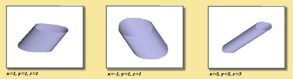
The extrude tool can also produce twisted extrusions by entering a twist
angle in the appropriate box as shown below:
The number of segments, i.e. divisions along the extrusion axis, can also be defined.
Altering the number of segments can make a difference to a twisted object:
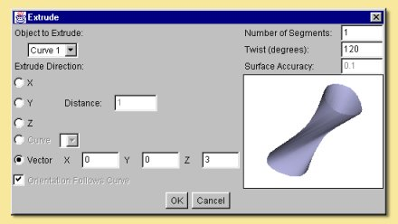
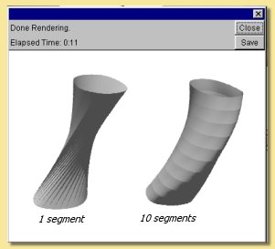
It is also possible to extrude one curve along another. In this case, the
extruded curve is pulled along the path defined by the second curve. The example below
illustrates this. Two curves were created in perpendicular planes (shown in Front and Top
views). Both curves need to be selected in the Object List, then click on Tools ->
Extrude. This brings up the same dialogue box as before. Now, however, the Extrude
Direction -> Curve option becomes available. Clicking this option and
selecting Curve 2 produces the result shown top right. Extruding Curve 2 along Curve 1
produces the object shown on bottom right.
The orientation of the extruded curve can also be specified to follow that of the
curve it is extruded along by clicking Orientation Follows Curve.
This causes the extruded curve to be always perpendicular to the tangent of the
path curve rather than maintaining a static orientation along the path. The difference
this makes is shown below:
| 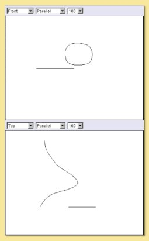 |
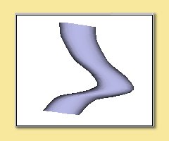
Orientation follows curve
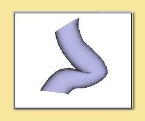
Static Orientation
|
The Extrude tool can also be used on open spline meshes and triangle meshes and,
in both cases, a triangle mesh is the result. In this example, a flat spline mesh was
produced using the spline tool .This was edited to produce the
shape shown and was then extruded using the Extrude tool.
.This was edited to produce the
shape shown and was then extruded using the Extrude tool.
When extruding meshes, the surface accuracy can be specified and, as with other
tools, this determines the number of points defining the resulting mesh.
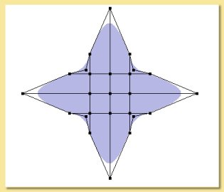
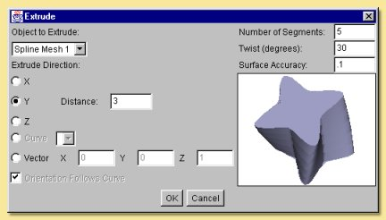
The effect of altering the surface accuracy in this example is shown below:
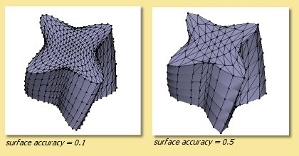
2.2.3 Lathe
The Lathe tool operates on a single curve. The operation sweeps the curve around a
defined axis or vector and produces a spline mesh. Highlighting a curve from the Object
List and selecting Lathe from the Tool menu produces the following
dialogue box:
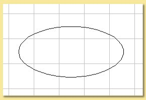
Curve used in lathe example
|
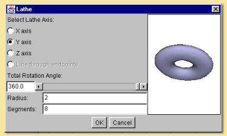 |
The curve object can be lathed around the x, y or z axes or around the line joining the
end of the curve. The angle of sweep can be defined - anything less than 360 degrees
produces an open surface. The radius is the distance between the centre of the
curve and the axis of sweep so a bigger radius in the example above would produce
a bigger hole in the middle of the torus. More typically, one might want to use the
lathe tool to create something like a wine glass:
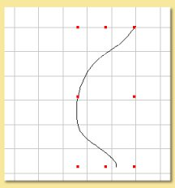
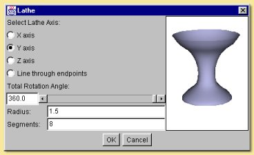
In this case, you will need to play around with the radius to get the required
shape.
The number of segments controls how many points are created in the resulting
spline mesh as shown on the right. Having more points means having more control on
the resulting object.
Note that to create a vase/glass etc. with some actual thickness, you will need to
create a closed curve like the following:
|
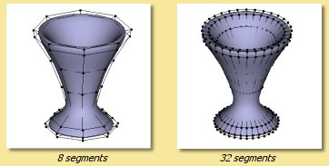 |
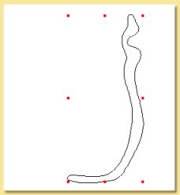
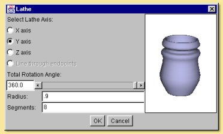
2.2.4 Skin
This tool fits a 'skin' to a series of curves which define the cross section at that
point. All the curves must have the same number of points and must all be either
open or closed, not a mixture of the two. The example below shows the spline surface
skin produced from 3 polygons. Note that, in order for the curves to have the same
number of points it was necessary to edit the triangle and square objects to make up the
number of points to 5 (to match the pentagon). This was done by double-clicking the
curve, selecting 2 adjacent points and selecting Curve -> Subdivide Selection.
This was performed once for the square and twice for the triangle.
Highlighting all 3 curves in the Object List and
selecting Tools -> Skin brings up the dialogue box on the right:
The curve order can be rearranged as required by selecting on a curve in the left hand
list and moving it up or down. The direction in which the points are joined can also
be reversed.
Clicking on OK produces the result below:
|
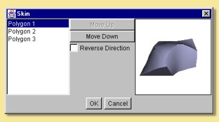 |
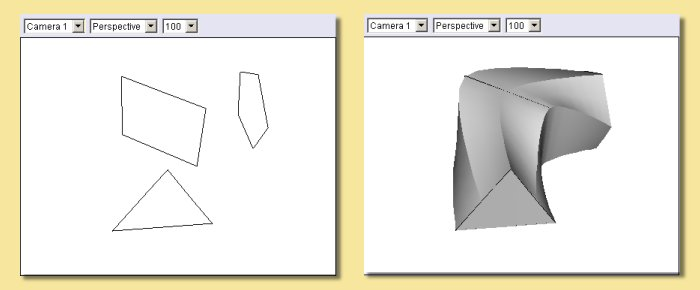
2.2.5 Boolean Modelling
Boolean Modelling is a powerful way of making complicated geometry relatively simply by
combining existing geometry in one of 4 ways. The Boolean tool currently works on
2 objects, one of which must be solid. To combine the objects, select both either
from a view window or the Object List and click on Tools -> Boolean Modelling.
A dialogue window similar to those below appears allowing the selection of the type
of Operation: Union, Intersection, First-Second and Second-First.
Union creates a new object which is the addition of the 2 objects,
Intersection creates a new object of the part of the objects that overlap and the other
2 are geometry subtractions. The images below show the effects of each operation
on 2 squashed spheres.
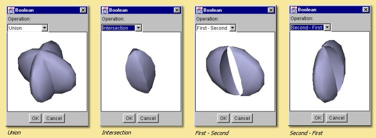
Clicking on OK produces a new object, the original objects still being retained and
completely independent of the new Boolean object. The objects making up the new
Boolean object, however, remain editable by double-clicking the Boolean object in the
Object List or selecting the object and clicking Object -> Edit Object
from the top menu. This brings up the Boolean editor which allows transformations
of the component objects and the re-selection, if required, of the operator performed on
them:
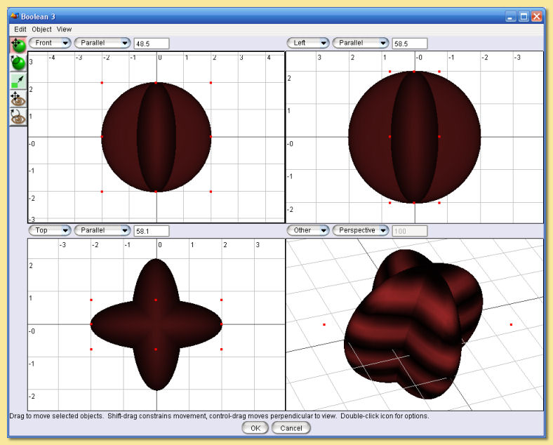
The icons on the left are the same as some on the main layout window. The Edit menu
allows the Boolean operation to be re-defined through Edit -> Properties.
The Object menu allows transformations and editing similar to the main layout screen
Object Menu .
A more complicated example gives an idea of what the Boolean tool is capable of.
We start off with a Boolean made from a difference of two cylinders, one inside another
(but taller). The Union image shows the 2 objects clearly. Selecting the First-Second
operation gives the desired effect.
Clicking OK gives the first stage of the turret. Now we add a cube scaled so that it
extends beyond the newly-created 'crater' as below left. Copy and pasting (
or using the Array tool with a suitable curve) produces copies of this cube around
the top of the soon-to-be turret (bottom right). These cubes are Unioned successively
with the Boolean tool until they form one Boolean object (delete the original
objects and the intermediate Booleans as you go). |
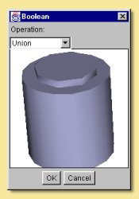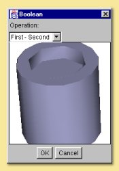 |
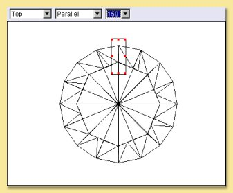
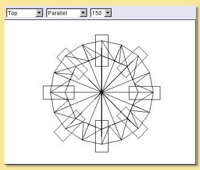
Select the main turret boolean and the combined cube boolean and create a difference.
Again the image on the left shows the objects clearly. Selecting First-Second produces the
turret we are after on the right. Clearly through further use of the Boolean tool,
a more complicated and realistic model can be built up.
Bear in mind also that, like other geometric objects, the resulting Boolean
object can be converted to a triangle mesh which allows more detailed refinements
and the application of the various smoothing methods.
|
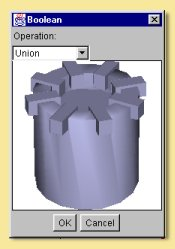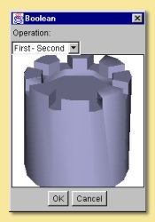 |
2.2.6 Tube
The Tube tool is applied to a curve and produces a Tube Object
which is basically a circular cross-sectioned extrusion along the curve.
To create a Tube Object, select the curve in the Object List and choose Tools -> Tube.... This
will display the Tube dialogue window. The image below shows a curve object and the Tube dialogue
produced:
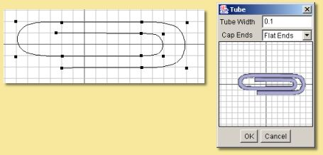
The dialogue allows the Tube Width or diameter to be specified and this is used along the
whole length of the tube. Note, however, that the width can be set at any point along the tube in the
Tube Object editor (see Tube Objects).
The Cap Ends option allows the tube to have either open ends or flat, capped ends. Once created,
tube objects can also have their ends joined together within the editor.
2.2.7 Text
The Text tool creates objects that represent text in various ways. To use it, choose Tools -> Text.... This
will display the Text dialogue window.
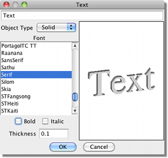
The dialogue allows you to specify the Text to generate and the Font and style (Bold or Italic)
to use. You can then select any of four object types to create:
Outline creates a set of Curve Objects that trace the outline of the text.
Tubes is like Outline, but it creates Tube Objects instead of curves. You can choose
the Thickness of the curves it generates.
Surface creates a 2-dimensional Triangle Mesh representing the text.
Solid is similar to Surface, but the mesh is extruded to create a solid 3-dimensional object. You can select
the thickness of the extruded mesh.